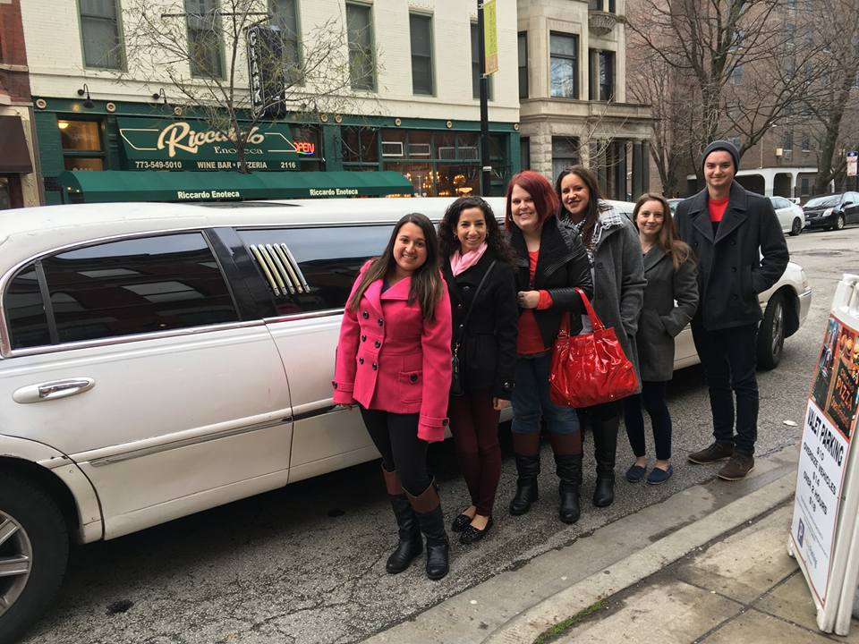
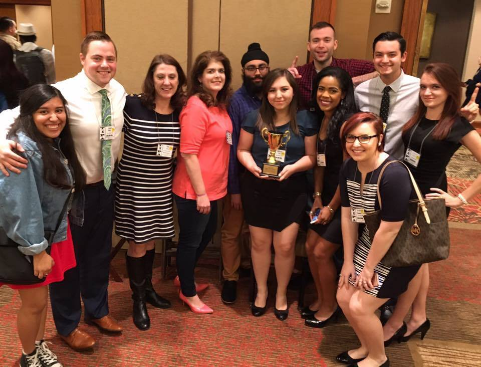

I am a graduate student in mass communication at Texas State University, concentrating in digital media. Starting Fall 2017, I became a graduate instructional assistant for two courses at TXST, Web Design and Fundamentals of Digital and Online Media.
My areas of interest are web journalism, political journalism, political communication through social media (specifically campaign communication), news gathering on social media and millennial attitudes towards politics and social media.
Prior to attending TXST, I graduated summa cum laude from Sam Houston State University with a BA in mass communication, concentrating in multiplatform journalism and minoring in political science. I spent five years as an undergraduate seeking opportunities to learn about these interests and gain theoretical and practical skills for future studies and employment.
Prior to attending SHSU, I enrolled and completed three semesters (Fall 2012, Spring and Summer 2013) at the University of Houston as a candidate for the Photography and Digital Media BFA program. I transferred to and began attending SHSU in Fall 2013.
While at SHSU, I served as a reporter and editor for the university's award-winning, independent student-newspaper, The Houstonian. During the 2014-2015 academic year, I worked as the editor for the Campus Culture section of the bi-weekly publication, assigning and writing stories on Greek Life, campus events, local arts and entertainment news, and features on students and faculty.
I also served as Photo Editor for the publication from March to May 2015. I assigned, shot and edited photographs for all sections of the publication and assisted the Layout Editor in designing each page of the paper. I also served as a weekly DJ for 90.5 KSHU-Huntsville, the university's student-run radio station, and have been a reporter and producer for Huntsville's local television news program Cable 7 News over multiple semesters.
While acting as a DJ for 90.5, I co-produced and narrated a radio documentary over one of Walker County and Huntsville's most historic sites, the Wynne Home. This documentary earned first place in the 2014 Texas Intercollegiate Press Association previously-published works competition.
In Spring 2015, I was selected as a recipient of the E.U.R.E.C.A Grant, and studied congressional Twitter use during the campaign for the 2014 Midterm Election. With two fellow undergrads and under the guidance of SHSU Associate Professor of Political Science Heather Evans, Ph. D., more than 100,000 individual tweets from the House and Senate were coded and analyzed for various characteristics.
Evans, myself and my fellow undergrads coauthored and presented "#Mudslinging on Twitter: When Twitter Fingers Become Trigger Fingers" at the Midwestern Political Science Association's annual convention in Chicago. Two weeks later, myself and one of the undergrad coauthors presented the paper at the Sam Houston State University Undergraduate Research Symposium.
The paper was published in Social Media + Society in May 2017.
The weekend of April 1-2, 2016, myself and several other undergraduate students in SHSU's mass communication department attended and competed in the annual Texas Intercollegiate Press Association convention and competition. I earned second place in feature writing and radio-sports writing, and third place in two-person photo essay.
SHSU also won the Director's Trophy for all-around excellence in on-site competition for the third time in four years.
In summer 2016, I worked as a research assistant for Associate Professor of Mass Communication Kiwon Seo, Ph. D. Over the course of two months, I searched through various databases and combed through thousands of research articles to aid in Seo's preparation for a meta-analysis on visual communication and persuasion.